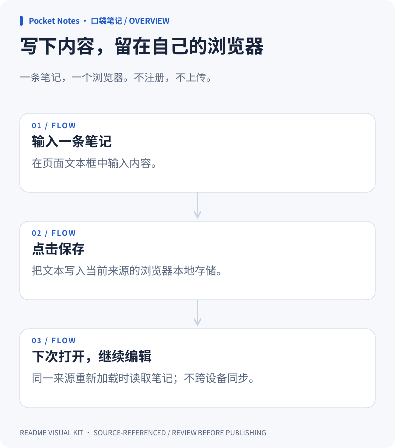
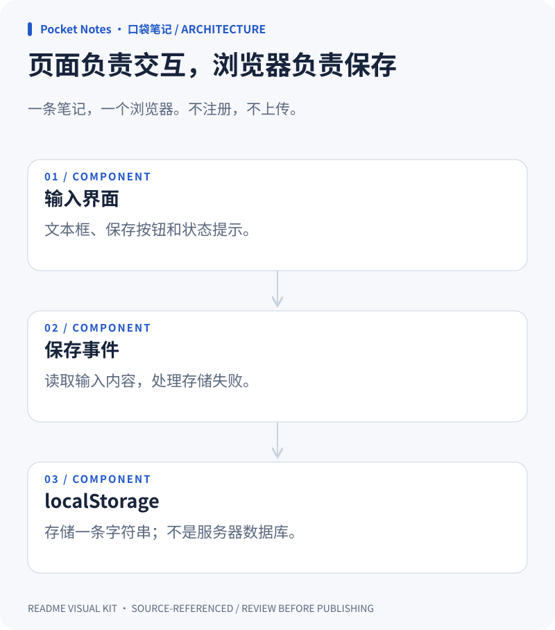
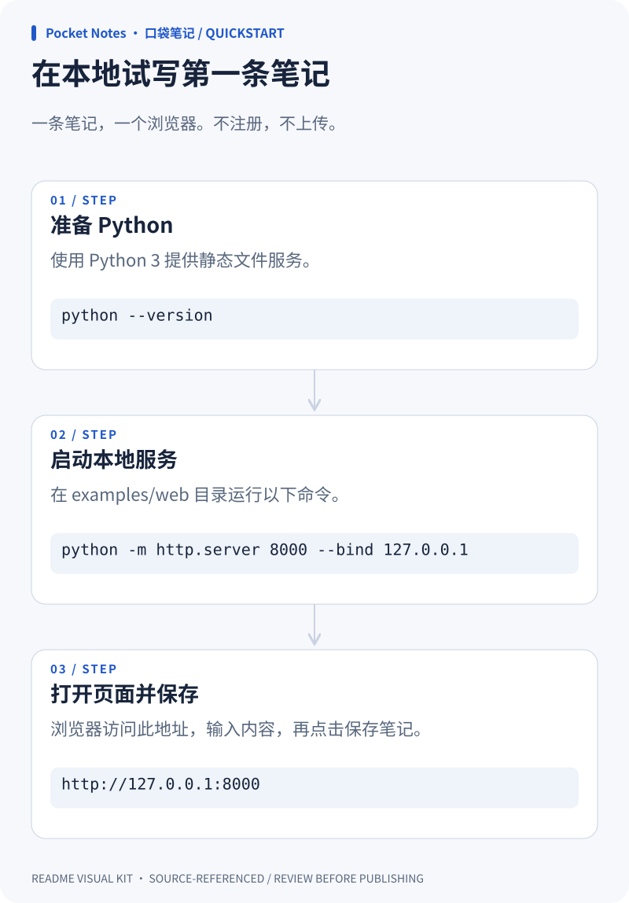

overview
Download SVG ↓写下内容，留在自己的浏览器

Swipe diagram ↔ / 左右滑动查看完整图表

architecture
Download SVG ↓页面负责交互，浏览器负责保存

Swipe diagram ↔ / 左右滑动查看完整图表

quickstart
Download SVG ↓在本地试写第一条笔记

Swipe diagram ↔ / 左右滑动查看完整图表

Put it in your README
These paths assume your README is beside the SVGs. Adjust the prefix when copying into your repository.
Sources, not assumptions
File paths and line ranges were checked. This does not verify meaning or architecture edges. Review all claims and excerpts before publishing; excerpts may contain private data.
overview / write index.html:5–6
<h1>Pocket Notes</h1><label for="note">写一条笔记</label> <textarea id="note"></textarea><button id="save">保存笔记</button><p id="status" role="status"></p>
overview / save index.html:12–14
document.querySelector('#save').addEventListener('click', () => {
try { localStorage.setItem('pocket-note', note.value); status.textContent = '已保存到当前浏览器。'; }
catch { status.textContent = '保存失败，请检查浏览器存储权限。'; }overview / restore index.html:8–11
const note = document.querySelector('#note');
const status = document.querySelector('#status');
try { note.value = localStorage.getItem('pocket-note') || ''; }
catch { status.textContent = '浏览器不允许本地存储。'; }architecture / input index.html:5–6
<h1>Pocket Notes</h1><label for="note">写一条笔记</label> <textarea id="note"></textarea><button id="save">保存笔记</button><p id="status" role="status"></p>
architecture / handler index.html:12–14
document.querySelector('#save').addEventListener('click', () => {
try { localStorage.setItem('pocket-note', note.value); status.textContent = '已保存到当前浏览器。'; }
catch { status.textContent = '保存失败，请检查浏览器存储权限。'; }architecture / store index.html:10–13
try { note.value = localStorage.getItem('pocket-note') || ''; }
catch { status.textContent = '浏览器不允许本地存储。'; }
document.querySelector('#save').addEventListener('click', () => {
try { localStorage.setItem('pocket-note', note.value); status.textContent = '已保存到当前浏览器。'; }quickstart / runtime README.md:8–8
需要 Python 3，用于启动本地静态文件服务。
quickstart / serve README.md:9–9
在本示例目录运行：`python -m http.server 8000 --bind 127.0.0.1`
quickstart / open README.md:10–10
打开 `http://127.0.0.1:8000`，输入文字，然后点击“保存笔记”。